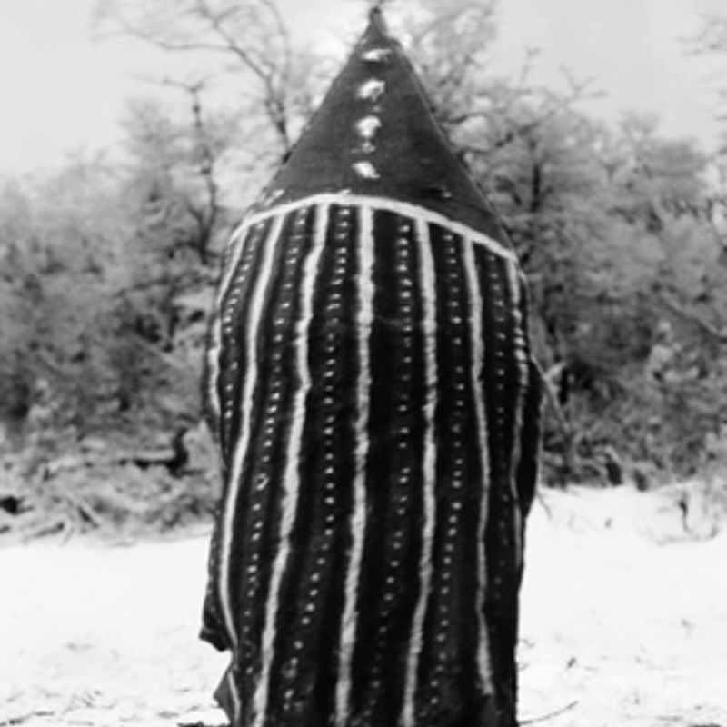
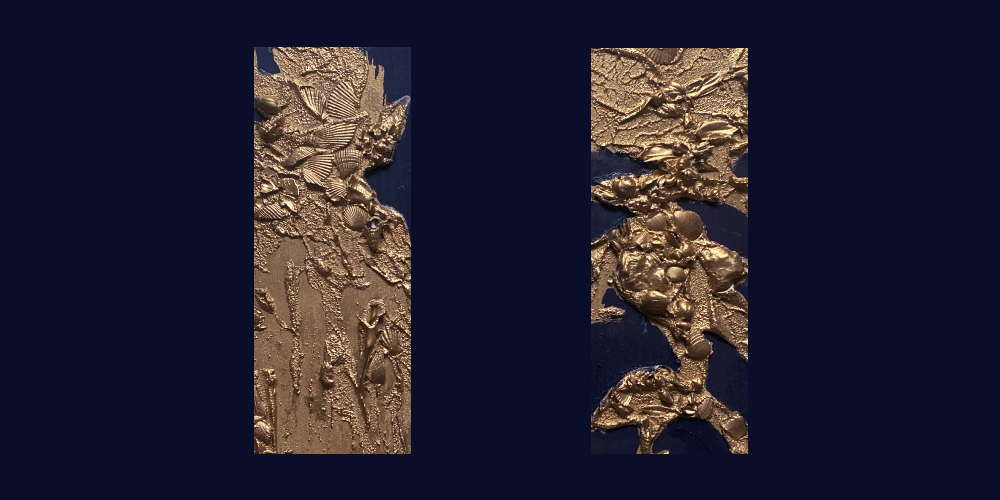

Shoort // Le Paysage vivant

— Poèmes, Joseph Brodsky
été 2026
Rite de passage

Paris 2026
150 × 50 cm
Peinture Acrylique / Medium / Divers sur Toile

Shoort // Le Paysage vivant
Les préparatifs de la cérémonie étaient menés dans le plus grand secret. La Lune désignait alors celles des femmes qui devaient incarner les différents esprits. Une fois les peintures et les masques préparés, les appelées s'exerçaient à reproduire l'attitude, la démarche et les gestes des esprits qu'elles allaient incarner. Certains de ces esprits — disait-on — surgissaient des profondeurs de la terre pour pénétrer dans le Hain et prendre part au rituel. Les autres descendaient du ciel, le plus souvent à la tombée de la nuit.
— Selk'nam (Ona) Chants of Tierra del Fuego, Argentina, Vol. II, Folkways Records & Anne Chapman, 1977.